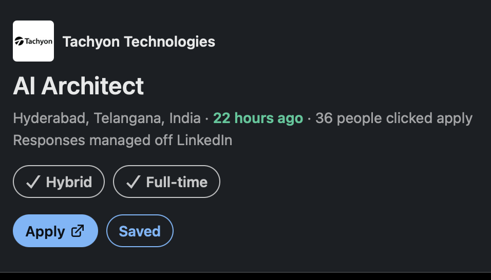

Job description · 20 September 2026
AI Architect
Tachyon Technologies — Hyderabad, Telangana · hybrid · full-time. “AI” here is short for artificial intelligence, and the seat is an architecture seat rather than a research or data-science one.
This page does two jobs, and it is worth knowing which is which before you read it. The first job is to render the posting itself, exactly as it was written, so that it can be read comfortably and re-read before a call. Every word inside the section headed The job description, word for word is the company’s wording and nothing has been added, softened, reordered or characterised there. The second job is the part that actually earns this page: underneath the posting, each requirement the company asks for is set beside what his own confirmed record contains, and labelled HIT, RAMP or GAP. That labelling is deliberately short and factual. It does not add up to a score — the weighted rubric, with criteria and weights, lives in index.html, and the company research lives in research.html. This page is only the posting and a plain reading of it.
The posting. linkedin.com/jobs/view/4469298952 — captured at intake so the listing can be reopened and checked again later. Postings change, close, and get re-listed under new requisition numbers, so the link is recorded rather than the memory of it. The LinkedIn card also says “Responses managed off LinkedIn”, which means the apply button leaves LinkedIn entirely and the résumé lands in the company’s own applicant tracking system — an applicant tracking system being the software a company uses to collect and sort applications. Where that path actually ends is traced step by step in research.html §5.
If you reopen the posting on the company’s own website, use the
-2 address. Tachyon’s site carries two different pages titled
“AI Architect”, and the obvious-looking one is a different job in a different
country. The seat in this workspace is
tachyontech.com/jobs/ai-architect-2/.
The full explanation of the mix-up sits at the top of
research.html and is not repeated here.
The posting facts, as the LinkedIn card states them
Below is the screenshot of the card exactly as he saw it. It is reproduced here because the applicant numbers and the “responses managed off LinkedIn” line come from the card rather than from the job description text, and a screenshot is the only durable record of a LinkedIn card — the live page changes its numbers every few hours.

The LinkedIn card, captured 20 September 2026
| Field | As the card and the posting state it |
|---|---|
| Company | Tachyon Technologies |
| Title | AI Architect |
| Location | Hyderabad, Telangana, India |
| Workplace type | Hybrid — stated on the LinkedIn card only. The word does not appear in the company’s own text of the same posting, which is a small discrepancy rather than a contradiction, and it is examined in research.html §5 |
| Employment type | Full-time |
| Posted | “22 hours ago” at the moment of capture, which places the posting at approximately 19 September 2026 |
| Applicant signal | 36 people clicked apply within those first 22 hours. Research measured the same counter at 41 roughly a day after posting, so the number is moving. Recorded as a fact about competition and timing, not as a judgement about the seat |
| Where responses go | “Responses managed off LinkedIn” — the apply button leaves LinkedIn and ends at the company’s own applicant tracking system under requisition TYI-4328 |
| Posting URL | linkedin.com/jobs/view/4469298952 |
| Experience, as written in the body | 15+ years, open-ended |
| Experience, as written in the requisition | 15–20 — narrower than the body’s “15+”. Both numbers are recorded rather than reconciled, because they are two different statements by the same employer |
Before the posting: the words it uses
The job description below is left completely untouched, which means its abbreviations are left untouched too. So that the house rule on expanding every abbreviation on first use is still honoured, every abbreviation the posting uses is expanded here first, in the order the posting uses them. Read this short list, then read the posting.
Expansions AI — artificial intelligence · Generative AI (often shortened to GenAI) — artificial intelligence that produces new text, code or images rather than only classifying existing data · Agentic AI — artificial intelligence that plans and carries out a sequence of steps by calling tools, rather than answering in one shot · LLM — large language model · RAG — retrieval-augmented generation, meaning the model is fed relevant documents fetched at question time so its answer is grounded in real source material · API — application programming interface · Azure — Microsoft’s cloud · AWS — Amazon Web Services · GCP — Google Cloud Platform · POC — proof of concept, a demonstration built to show an idea works, which is explicitly not what this posting is asking for · ERP — enterprise resource planning software · CRM — customer relationship management software · REST — representational state transfer, the ordinary style of web API · NoSQL — non-relational databases, as opposed to the relational kind queried with SQL, structured query language · Infrastructure-as-Code — describing servers and networks in text files that are version-controlled and applied automatically, instead of clicking through a console · CI/CD — continuous integration and continuous delivery · MCP — Model Context Protocol, an open standard for letting a model call external tools and data sources in a uniform way.
A fuller, gentler glossary already exists and is not duplicated here. research.html §1 defines roughly twenty of these terms and platforms in plain English — what each thing actually is, and then what the nearest equivalent in his own confirmed record is. If any word in the posting below is unfamiliar, that is the page to open, not this one.
The job description, word for word
Everything from here to the end of Why Tachyon is the company’s own text, reproduced without edits of any kind. The annotations start afterwards, in their own clearly-marked section, so that the posting and the reading of the posting are never mixed together.
About the job
AI Architect — Enterprise AI | Generative AI | Agentic AI | Cloud Architecture | Hyderabad
Generative AI and agentic systems are moving from pilots to the core of how enterprises operate — and Tachyon Technologies is where that shift is being architected. We’re looking for a senior AI Architect who wants to own that transformation end to end: designing the systems, setting the standards, and seeing solutions run in production at enterprise scale, not just in a slide deck. This is a role for someone who has already done real cloud architecture, has since built genuine depth in LLMs, RAG, and agentic design, and wants a platform where that combination is the whole job — not a side project bolted onto something else.
What You Will Do
- Architect end-to-end enterprise AI solutions spanning applications, APIs, data, cloud infrastructure, security, integrations, and user experience.
- Design and lead Generative AI and Agentic AI solutions using LLMs, RAG, enterprise search, tool/function calling, and multi-agent orchestration.
- Define cloud-native architectures for AI workloads on Azure, AWS, and/or GCP using managed AI services, containers, Kubernetes, and serverless patterns.
- Evaluate and select models, frameworks, vector databases, and cloud services against business, security, performance, and cost requirements.
- Design integrations between AI solutions and enterprise platforms — Salesforce, SAP, ServiceNow, ERP/CRM, data platforms, and external APIs.
- Create architecture blueprints, reference patterns, reusable components, and technical standards for AI delivery.
- Lead technical discovery, architecture workshops, design reviews, and proof-of-concept initiatives with engineering and customer teams.
- Define AI evaluation and observability approaches — grounding, accuracy, hallucination risk, latency, cost, and safety.
- Establish guardrails, human-in-the-loop controls, identity and access models, and Responsible AI practices.
- Mentor senior engineers and technical leads, and help build strong architecture practice across AI initiatives.
What You Bring
- 15+ years in software engineering, solution architecture, enterprise architecture, or cloud architecture, with recent hands-on technical work.
- A production GenAI or Agentic AI system you’ve personally architected and shipped — not a POC — using LLMs, RAG, tool/function calling, or multi-agent orchestration.
- Deep, hands-on cloud architecture experience on Azure, AWS, or GCP; multi-cloud experience is a strong plus.
- Working fluency with modern AI frameworks such as LangChain, LangGraph, Semantic Kernel, AutoGen, or CrewAI.
- Strong software engineering foundation with hands-on programming, preferably Python, and the ability to review implementation-level decisions.
- Solid grounding in microservices, REST APIs, event-driven architecture, and enterprise integration patterns.
- Experience with relational, NoSQL, and vector data platforms, and designing data/knowledge access patterns for AI.
- Excellent communication — equally comfortable with engineering teams and business/technology leaders.
Also Great to Have
- Infrastructure-as-Code (Terraform, Bicep, CloudFormation), CI/CD, and production support practices.
- Hands-on exposure to Azure OpenAI/AI Foundry, AWS Bedrock, or Google Vertex AI/Gemini.
- Cloud architecture certification from Azure, AWS, or GCP.
- Experience building reusable AI platforms, accelerators, or enterprise AI capabilities.
- Exposure to Model Context Protocol (MCP), knowledge graphs, or advanced enterprise search.
- Background in customer-facing architecture, solutioning, or technical consulting.
Why Tachyon
- Own architecture decisions on high-visibility enterprise AI programs, from first workshop to production rollout.
- Work at the intersection of deep cloud engineering and cutting-edge agentic AI — not one at the expense of the other.
- Shape reusable patterns and standards that other architects and engineers will build on.
- Direct exposure to customer stakeholders and technology leadership, with real influence over technical direction.
Requirement by requirement — where his record actually stands
Everything above this line was the company talking. Everything below it is the reading of what the company asked for. The fourteen numbered requirements from What You Bring and Also Great to Have are repeated one at a time, and each one carries a single label. The labels mean exactly this, and nothing more:
HIT He has direct, confirmed evidence. The thing the posting asks for is something he has genuinely done, and there is a source for it — either the journey document, one of the ten killer-query case studies, or a point he has confirmed himself.
RAMP A specific product he has not used, where something he has used does the same job. The house rule in this workspace is that a named tool he has not touched is a ramp item, never a capability cap. The capability is present; the brand name is not. These are the honest answers to give in a room — name the tool he used, name the equivalence, and stop there.
GAP Genuinely absent. Nothing in the record covers it, and no equivalent is being stretched to cover it either. A gap is written down plainly here because an internal page is where gaps belong; it is never advertised in anything he sends.
No numbers appear in this section on purpose. Nothing here is scored, weighted or added up. The weighted rubric — criteria, weights, marks out of ten, the binding constraint and the smallest honest lift — is a separate artefact and lives in index.html.
What You Bring — the eight stated requirements
| # | What the posting asks for | Verdict | The evidence, stated plainly |
|---|---|---|---|
| 1 | 15+ years in software engineering, solution architecture, enterprise architecture or cloud architecture, with recent hands-on technical work | HIT | 19+ years, comfortably past the bar, and the second half of the sentence is the part that matters more. The hands-on work is recent rather than historical: the LangChain and LangGraph orchestration work, the Kubernetes and Terraform adoption, and the Model Context Protocol servers are all from the most recent role, not from a decade ago. |
| 2 | A production Generative AI or Agentic AI system personally architected and shipped — explicitly not a proof of concept — using large language models, retrieval-augmented generation, tool or function calling, or multi-agent orchestration | HIT | This is the hardest single line in the posting, and it is a hit rather than a stretch. The cross-domain analytics service is a deterministic multi-agent orchestrator built as a compiled LangGraph StateGraph, and its own case study records it as “a production deployment — live on the platform’s self-hosted, in-VPC stack” and “shipped after executive sign-off” — VPC meaning virtual private cloud, the customer’s own private network inside the cloud. Retrieval-augmented generation, tool calling through real Model Context Protocol servers, and multi-agent orchestration are all present in the same body of work. See killer query 10. |
| 3 | Deep, hands-on cloud architecture experience on Azure, AWS, or GCP; multi-cloud experience is a strong plus | HIT | The requirement is written with “or”, so Amazon Web Services satisfies it exactly as written, and his Amazon Web Services depth is the strongest part of his record: Kubernetes, Terraform, Elastic Container Service Fargate, Aurora and Relational Database Service for relational storage, DynamoDB for non-relational, Neptune for the graph, Kinesis for streaming, SageMaker for models, and a multi-availability-zone design with failover and disaster recovery. The multi-cloud clause is a separate matter and is handled in the table further down. |
| 4 | Working fluency with modern AI frameworks such as LangChain, LangGraph, Semantic Kernel, AutoGen or CrewAI | HIT | LangChain and LangGraph are both his, and they are the two the posting names first. The wording is “such as”, which makes this a family requirement rather than a product one, so the family is satisfied. Semantic Kernel, AutoGen and CrewAI are ramp items and are listed separately below so they are not forgotten. |
| 5 | Strong software engineering foundation with hands-on programming, preferably Python, and the ability to review implementation-level decisions | HIT | The foundation itself is not in question — roughly eleven years of Java across three eras, with Spring Boot at two employers, plus the architecture and review work that this sentence’s second half is really asking about. On Python, the honest number is stated here so it is never overstated anywhere else: production Python is about fourteen months — FastAPI, Django, LangChain and LangGraph. The posting says “preferably”, which is a soft qualifier, and this page never implies more than fourteen months. |
| 6 | Solid grounding in microservices, REST APIs, event-driven architecture, and enterprise integration patterns | HIT | All four parts are covered. Microservices and representational state transfer APIs run through the whole record, from decomposing IBM Configuration Manager into Java and Spring Boot services onwards. Event-driven architecture is the two-stream Amazon Kinesis design behind the chat platform, which also carried the high-availability work. Enterprise integration patterns are the 25 hotel suppliers integrated through a MuleSoft enterprise service bus — an enterprise service bus being the middle layer that lets many separate systems talk to each other through one place. |
| 7 | Experience with relational, NoSQL and vector data platforms, and designing data and knowledge access patterns for AI | RAMP | Three of the four parts are outright hits and one is a ramp, so the row as a whole is
marked ramp rather than hit, which is the cautious reading. Relational —
PostgreSQL on Amazon Aurora and Amazon Relational Database Service. Non-relational
— Amazon DynamoDB, adopted across five sub-teams. Knowledge access patterns
— the Amazon Neptune context graph with a graph neural network on top of it, which
is precisely what “knowledge access patterns for AI” describes. The ramp is
the vector database: he has not run a dedicated vector product, but he built the
same capability on Elasticsearch dense_vector filtered
nearest-neighbour search, used as the authoritative serving index. That is vector
retrieval in production; it simply is not a vector-database brand name. |
| 8 | Excellent communication — equally comfortable with engineering teams and business or technology leaders | HIT | Both halves have evidence. On the engineering side, an organisation of six sub-teams at VoltusWave — backend, React Native, web, artificial intelligence, quality assurance and DevOps — and distributed United States and India teams at Deque. On the leadership side, the cross-domain service shipped after executive sign-off on the design, which is a documented instance of carrying an architecture through a leadership review rather than a claim about being persuasive. |
Also Great to Have — the six optional requirements
These six are explicitly optional in the posting’s own framing. They are annotated to the same standard anyway, because an optional line is often where an interviewer goes looking for depth, and because one of them is the only clean gap on the whole page.
| # | What the posting asks for | Verdict | The evidence, stated plainly |
|---|---|---|---|
| 9 | Infrastructure-as-Code (Terraform, Bicep, CloudFormation), CI/CD, and production support practices | HIT | Terraform is named first in the posting’s own list and it is his — run hands-on, and adopted as a company-wide standard rather than merely used on one project. Continuous integration and delivery is covered by the Jenkins to GitHub Actions migration at Deque and by deploy time moving from hours to under ten minutes at VoltusWave. Bicep and CloudFormation are the two he has not used; both describe cloud infrastructure in files exactly as Terraform does, so they are ramp items inside an otherwise satisfied line. |
| 10 | Hands-on exposure to Azure OpenAI / AI Foundry, AWS Bedrock, or Google Vertex AI / Gemini | RAMP | None of those three managed services is in his record, and none is claimed here. What he did instead is the harder version of the same problem: he ran a self-hosted Llama 3.1 model via Ollama inside the client’s own virtual private cloud, because patient data was not allowed to leave the network, and used Amazon SageMaker for the modelling work. Hosting and governing a model yourself is the same architectural decision as choosing a managed model service, taken the other way. The honest sentence in a room is that he has not used a managed model endpoint, and that he has done the self-hosted equivalent under a compliance constraint. |
| 11 | Cloud architecture certification from Azure, AWS or GCP | GAP | He holds none of these. Nothing in this workspace implies otherwise, and no equivalent is offered in its place, because a certification is a document and either you have it or you do not. It is an optional line in the posting, and it is the only clean, unambiguous gap in either list. |
| 12 | Experience building reusable AI platforms, accelerators, or enterprise AI capabilities | HIT | The Amura work is exactly this shape. Ten separate high-value capabilities were built on one shared self-hosted platform with shared statistical contracts, shared provenance envelopes, a tenant-scoped traversal-source wrapper reused across queries, and reusable Model Context Protocol servers — which is the definition of a reusable platform rather than ten disconnected projects. Alongside that, a measured rollout of Claude Code and Codex across engineering is an enterprise AI capability in the other sense of the phrase: AI adopted as an internal standard. |
| 13 | Exposure to Model Context Protocol, knowledge graphs, or advanced enterprise search | HIT | All three, not one of three. Real Model Context Protocol servers, built and run rather than read about. Knowledge graphs — the Amazon Neptune context graph, with a graph neural network over it. Advanced enterprise search — Elasticsearch as the authoritative serving index, with filtered nearest-neighbour vector search alongside ordinary keyword retrieval. The posting offers these as an or list; he clears all three. |
| 14 | Background in customer-facing architecture, solutioning, or technical consulting | HIT | The VoltusWave work was client work throughout — eight early clients, and the Amura platform architected for a customer and signed off by that customer’s leadership. At Deque the platform served large regulated enterprise customers, and the isolation and single-sign-on work was driven by what those customers required. Customer names stay off written artefacts by standing rule, so they are deliberately absent here even though they are strong evidence when spoken. |
Two more things, sitting just outside those two lists
Both of these are real requirements in the posting, but neither is a numbered line in What You Bring or Also Great to Have, so neither belongs in the tables above. They are recorded separately rather than quietly folded in, because folding them in would make the counts above mean something different from what they say.
| Where it appears | What it asks for | Verdict | The evidence, stated plainly |
|---|---|---|---|
| Trailing clause of What You Bring line 3 | “multi-cloud experience is a strong plus” | GAP | His cloud is Amazon Web Services, and only Amazon Web Services. Microsoft Azure and Google Cloud Platform are both on the never-claim list in this workspace, which means they are never written down in either direction as something he has. The main requirement it hangs off is satisfied, because the posting wrote “Azure, AWS, or GCP” with an or. The plus is the part he does not have, and saying so in one sentence is a much better answer than an equivalence that would not survive a follow-up question. |
| What You Will Do, fifth responsibility | “Design integrations between AI solutions and enterprise platforms — Salesforce, SAP, ServiceNow, ERP/CRM, data platforms, and external APIs” | GAP | Salesforce, SAP, ServiceNow, enterprise resource planning and customer relationship management systems are all verified absent — zero occurrences across every source in this repository. This is the one substantial domain gap on the seat, and it is worth knowing that it points straight at Tachyon’s own history: the company’s published work is overwhelmingly SAP and Salesforce, which is set out in research.html §3. What is present is the generic skill underneath the named products — integrating many independent systems through a common layer, evidenced by the MuleSoft enterprise service bus work. That is a genuine partial answer, and it is not the same as knowing Salesforce. |
The count, so the page can be checked at a glance
Fourteen numbered requirements were annotated from the two lists the posting itself marks as requirements, plus two further items that sit outside those lists. Set out together:
These counts are a tally of labels, not a score. Lines are not equal in weight — requirement 2, the shipped production agentic system, carries far more of this seat than the certification line does, and expressing that difference is the job of the weighted rubric in index.html, not of a count.
What the posting does not state
Listed so that an absent field is never mistaken for a satisfied one. These are gaps in the source document, not gaps in his record, and several of them are worth turning into questions on a call. The forcing questions are already drafted in research.html §6.
- Whether this is internal architecture work on Tachyon’s own platform, or a billable architect placed on a client programme — the single most consequential unknown on the seat, and it appears nowhere in the text
- How many days a week “hybrid” actually means, and which office
- Who the role reports to, and whether any other architects already hold the same scope
- Team size, or how many engineers the mentoring line covers
- Whether the seat is new headcount or a backfill
- Any named hiring manager or contact — none appears in the job description, in the requisition, or on the company’s job page
- The interview process — number of rounds, format, or who conducts them
- Which cloud the existing work actually runs on, despite the posting naming three
- Whether “multi-agent orchestration” describes something already running, or something they intend to build
- On-call expectations, travel cadence, or overlap hours with teams outside India
- Any named client, on this posting or across the company’s published work
Where to go next
- The weighted rubric — the criteria, their weights, the technical score, the binding constraint and the smallest honest lift. Every number about this seat lives there, and none lives here.
- Company research — the verdict, the glossary, what Tachyon Technologies actually is, green and red flags, how the apply path is wired end to end, the forcing questions for a call, and an explicit list of what could not be established.
- The plain-English glossary — roughly twenty terms and platforms from this posting, each explained as a concept and then set beside the nearest thing in his own record.
- How applying actually lands — the traced path from the LinkedIn button to the company’s applicant tracking system and requisition TYI-4328.
- Killer query 10 — cross-domain analytics — the case study behind requirement 2, the shipped production multi-agent system, which is the hardest line in this posting and the one it is most worth being able to narrate from memory.